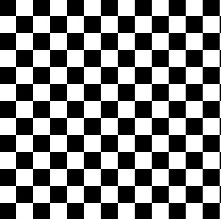

"Hello Sharing
World"
CREATIVE COMMONS GLOBAL SUMMIT 2015
A joyful celebration in the value of openness and sharing, creating a positive change with people from over 80 countries is taking place in October, in Korea.
2015.10.15(THU) ~ 16(FRI)
@National Museum of Korea, Art Center Nabi and more
Main Program
Lecture
It is a long established fact that a reader will be distracted content of a page when looking at its layout.
Lecture
It is a long established fact that a reader will be distracted content of a page when looking at its layout.
Lecture
It is a long established fact that a reader will be distracted content of a page when looking at its layout.
Lecture
It is a long established fact that a reader will be distracted content of a page when looking at its layout.
Lecture
It is a long established fact that a reader will be distracted content of a page when looking at its layout.
Featured Speakers
